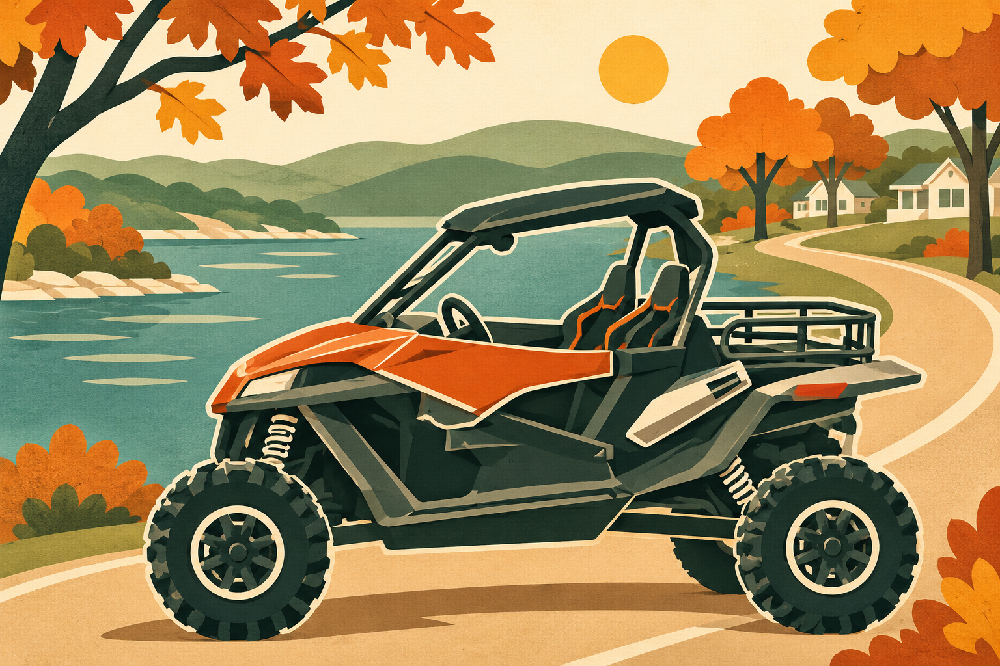
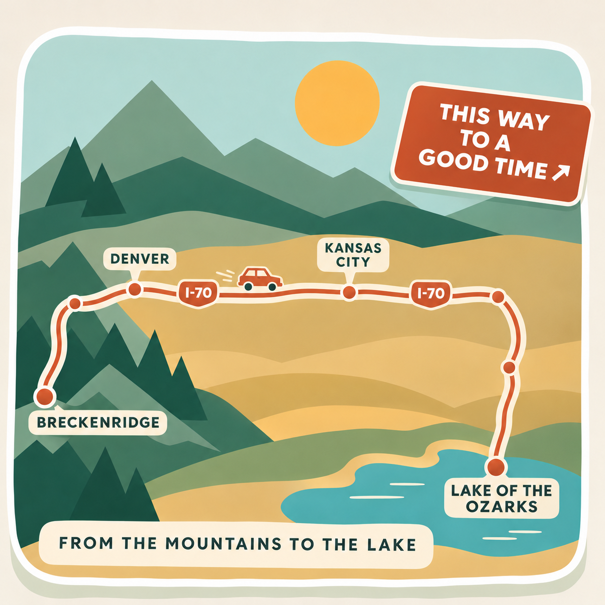
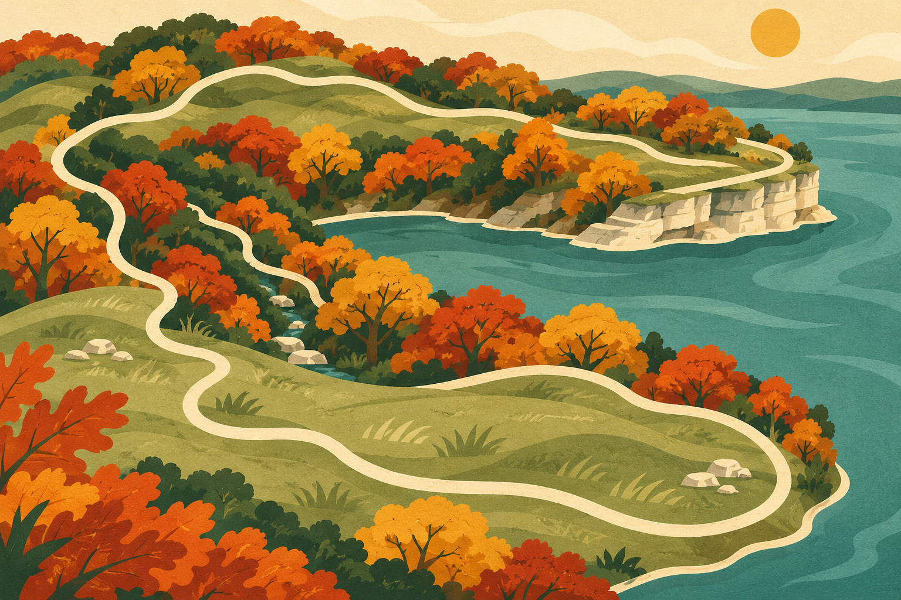
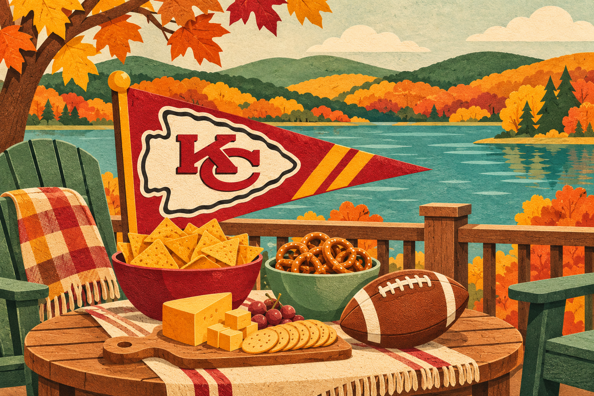

Orange buggy cruise
Cruise the neighborhood and sight see in the buggy.
NOVEMBER 26, 2026 · THANKSGIVING
Come hungry, get comfy, enjoy the views.
Fun ideas
Here are some weather dependent ideas while you're here.
PICK YOUR ADVENTURE

Cruise the neighborhood and sight see in the buggy.

This nearby 2 mile trail rises to one of the highest glades in the state park before dropping down to lake level where it crosses a ravine then rises back up to a dolomite cliff overlooking the lake.

We’ll have snacks throughout the day, plenty of seating on the deck, and lovely walks around the property and boat docks.
Food for the day
Coffee and tea, cold-smoked salmon eggs Benedict, egg muffins, granola bars, and bananas.
A charcuterie board will keep us going between breakfast, adventures, and the Thanksgiving meal.
Smoked turkey is the feature. Sides in the mix include butternut squash soup, salad, mashed potatoes, green bean casserole, stuffing, and deviled eggs. Pumpkin roll for dessert!
AS THE DAY WINDS DOWN
4:52 p.m. CST · Sunset golden happy hour
7:20 p.m. · Chiefs kickoff
Come gather at the lake. Good company and a warm welcome await.
THE TOWNHOMES AT